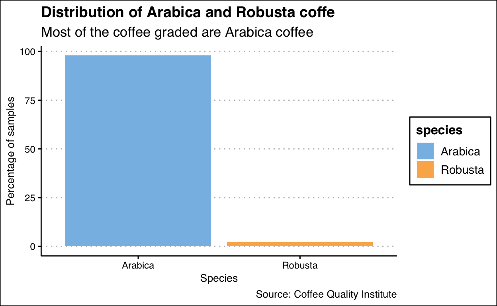
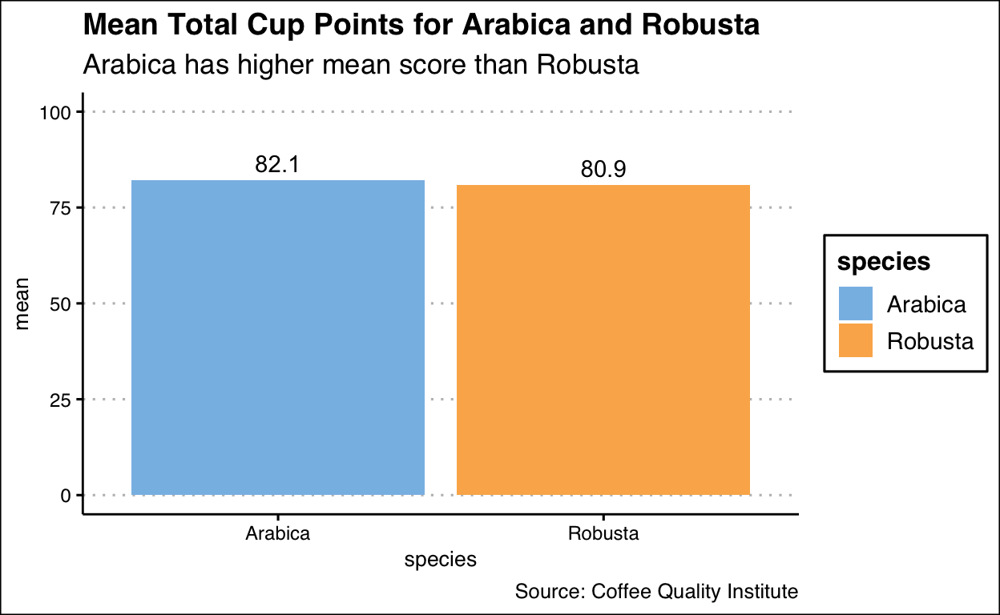
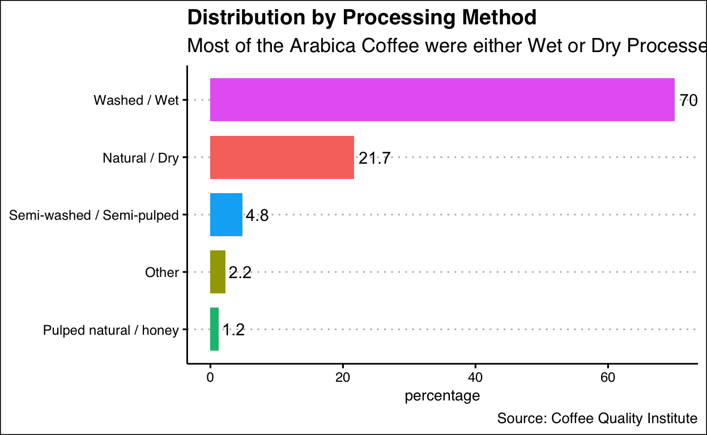
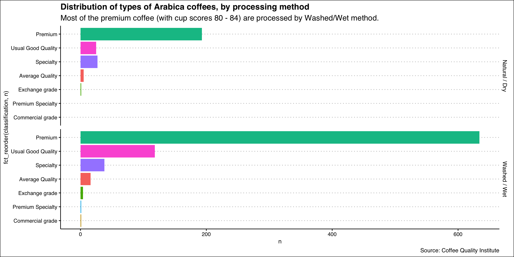
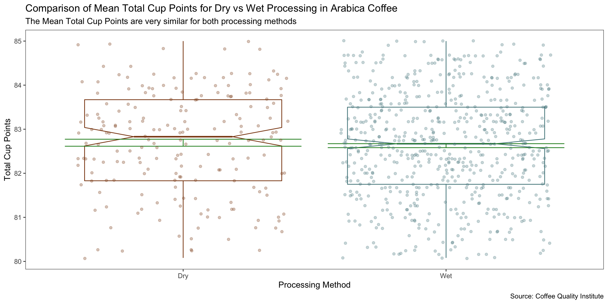
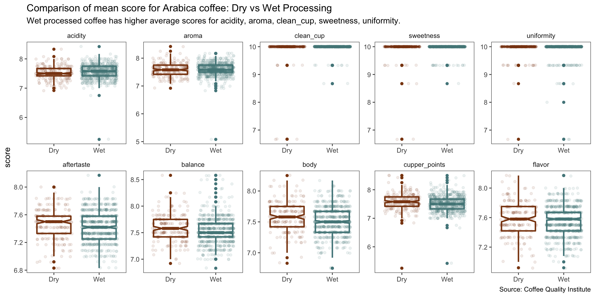
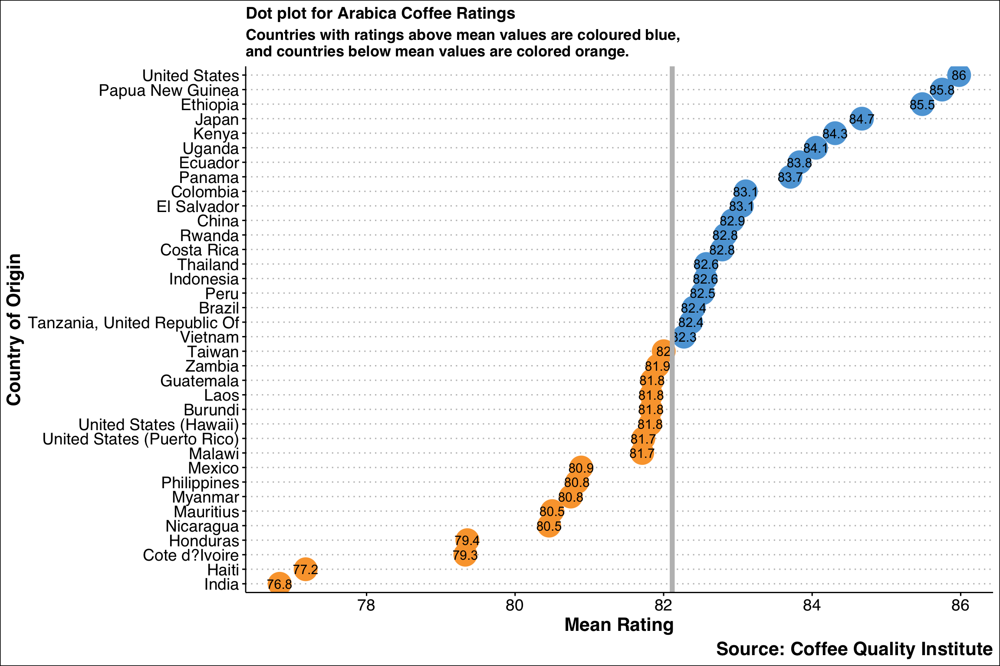
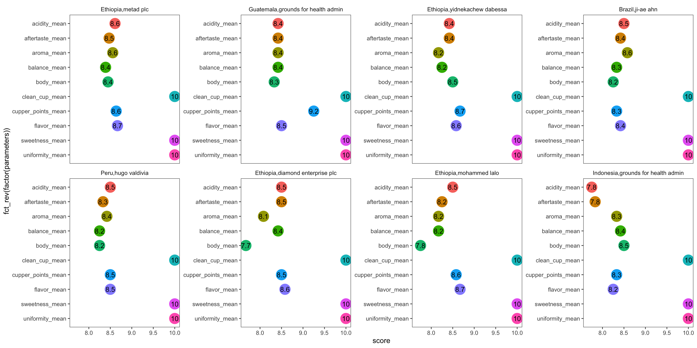
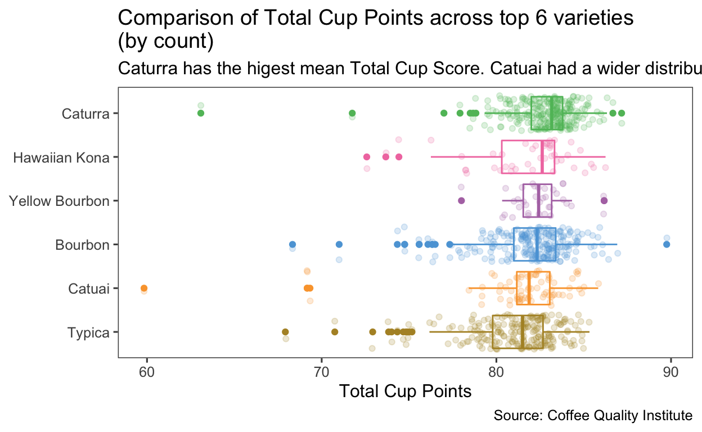
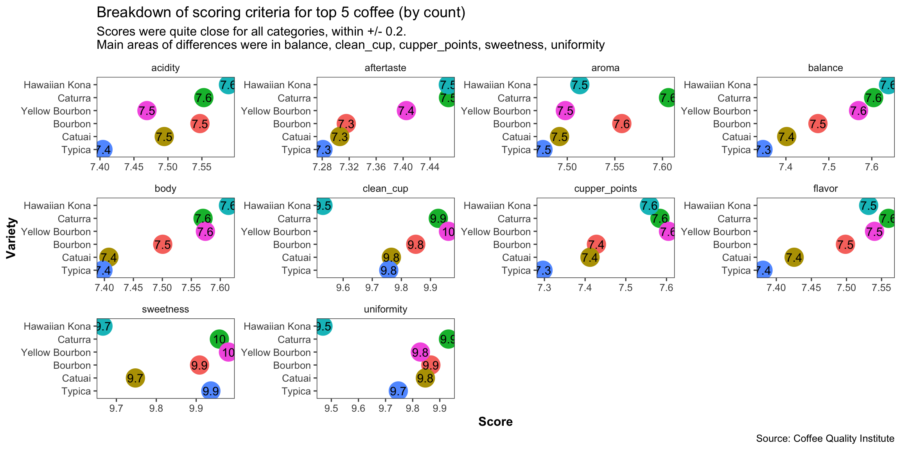

Exploratory Data Analysis on Coffee Ratings
To practice data transformation and visualization on a tidytuesday dataset that is relatable to food (since I am a food science graduate).
The main areas that I will focus on would be the scoring differences between types of coffee (Arabica vs Robusta), processing methods (Wet vs Dry), country of origin/companies (top 6 by score), as well as varieties (top 6 by count).
tuesdata <- tidytuesdayR::tt_load(2020, week = 28)
Downloading file 1 of 1: `coffee_ratings.csv`coffee_ratings <- tuesdata$coffee_ratings
Skimming the data using the skimr package.
skim(coffee_ratings)
| Name | coffee_ratings |
| Number of rows | 1339 |
| Number of columns | 43 |
| _______________________ | |
| Column type frequency: | |
| character | 24 |
| numeric | 19 |
| ________________________ | |
| Group variables | None |
Variable type: character
| skim_variable | n_missing | complete_rate | min | max | empty | n_unique | whitespace |
|---|---|---|---|---|---|---|---|
| species | 0 | 1.00 | 7 | 7 | 0 | 2 | 0 |
| owner | 7 | 0.99 | 3 | 50 | 0 | 315 | 0 |
| country_of_origin | 1 | 1.00 | 4 | 28 | 0 | 36 | 0 |
| farm_name | 359 | 0.73 | 1 | 73 | 0 | 571 | 0 |
| lot_number | 1063 | 0.21 | 1 | 71 | 0 | 227 | 0 |
| mill | 315 | 0.76 | 1 | 77 | 0 | 460 | 0 |
| ico_number | 151 | 0.89 | 1 | 40 | 0 | 847 | 0 |
| company | 209 | 0.84 | 3 | 73 | 0 | 281 | 0 |
| altitude | 226 | 0.83 | 1 | 41 | 0 | 396 | 0 |
| region | 59 | 0.96 | 2 | 76 | 0 | 356 | 0 |
| producer | 231 | 0.83 | 1 | 100 | 0 | 691 | 0 |
| bag_weight | 0 | 1.00 | 1 | 8 | 0 | 56 | 0 |
| in_country_partner | 0 | 1.00 | 7 | 85 | 0 | 27 | 0 |
| harvest_year | 47 | 0.96 | 3 | 24 | 0 | 46 | 0 |
| grading_date | 0 | 1.00 | 13 | 20 | 0 | 567 | 0 |
| owner_1 | 7 | 0.99 | 3 | 50 | 0 | 319 | 0 |
| variety | 226 | 0.83 | 4 | 21 | 0 | 29 | 0 |
| processing_method | 170 | 0.87 | 5 | 25 | 0 | 5 | 0 |
| color | 218 | 0.84 | 4 | 12 | 0 | 4 | 0 |
| expiration | 0 | 1.00 | 13 | 20 | 0 | 566 | 0 |
| certification_body | 0 | 1.00 | 7 | 85 | 0 | 26 | 0 |
| certification_address | 0 | 1.00 | 40 | 40 | 0 | 32 | 0 |
| certification_contact | 0 | 1.00 | 40 | 40 | 0 | 29 | 0 |
| unit_of_measurement | 0 | 1.00 | 1 | 2 | 0 | 2 | 0 |
Variable type: numeric
| skim_variable | n_missing | complete_rate | mean | sd | p0 | p25 | p50 | p75 | p100 | hist |
|---|---|---|---|---|---|---|---|---|---|---|
| total_cup_points | 0 | 1.00 | 82.09 | 3.50 | 0 | 81.08 | 82.50 | 83.67 | 90.58 | ▁▁▁▁▇ |
| number_of_bags | 0 | 1.00 | 154.18 | 129.99 | 0 | 14.00 | 175.00 | 275.00 | 1062.00 | ▇▇▁▁▁ |
| aroma | 0 | 1.00 | 7.57 | 0.38 | 0 | 7.42 | 7.58 | 7.75 | 8.75 | ▁▁▁▁▇ |
| flavor | 0 | 1.00 | 7.52 | 0.40 | 0 | 7.33 | 7.58 | 7.75 | 8.83 | ▁▁▁▁▇ |
| aftertaste | 0 | 1.00 | 7.40 | 0.40 | 0 | 7.25 | 7.42 | 7.58 | 8.67 | ▁▁▁▁▇ |
| acidity | 0 | 1.00 | 7.54 | 0.38 | 0 | 7.33 | 7.58 | 7.75 | 8.75 | ▁▁▁▁▇ |
| body | 0 | 1.00 | 7.52 | 0.37 | 0 | 7.33 | 7.50 | 7.67 | 8.58 | ▁▁▁▁▇ |
| balance | 0 | 1.00 | 7.52 | 0.41 | 0 | 7.33 | 7.50 | 7.75 | 8.75 | ▁▁▁▁▇ |
| uniformity | 0 | 1.00 | 9.83 | 0.55 | 0 | 10.00 | 10.00 | 10.00 | 10.00 | ▁▁▁▁▇ |
| clean_cup | 0 | 1.00 | 9.84 | 0.76 | 0 | 10.00 | 10.00 | 10.00 | 10.00 | ▁▁▁▁▇ |
| sweetness | 0 | 1.00 | 9.86 | 0.62 | 0 | 10.00 | 10.00 | 10.00 | 10.00 | ▁▁▁▁▇ |
| cupper_points | 0 | 1.00 | 7.50 | 0.47 | 0 | 7.25 | 7.50 | 7.75 | 10.00 | ▁▁▁▇▁ |
| moisture | 0 | 1.00 | 0.09 | 0.05 | 0 | 0.09 | 0.11 | 0.12 | 0.28 | ▃▇▅▁▁ |
| category_one_defects | 0 | 1.00 | 0.48 | 2.55 | 0 | 0.00 | 0.00 | 0.00 | 63.00 | ▇▁▁▁▁ |
| quakers | 1 | 1.00 | 0.17 | 0.83 | 0 | 0.00 | 0.00 | 0.00 | 11.00 | ▇▁▁▁▁ |
| category_two_defects | 0 | 1.00 | 3.56 | 5.31 | 0 | 0.00 | 2.00 | 4.00 | 55.00 | ▇▁▁▁▁ |
| altitude_low_meters | 230 | 0.83 | 1750.71 | 8669.44 | 1 | 1100.00 | 1310.64 | 1600.00 | 190164.00 | ▇▁▁▁▁ |
| altitude_high_meters | 230 | 0.83 | 1799.35 | 8668.81 | 1 | 1100.00 | 1350.00 | 1650.00 | 190164.00 | ▇▁▁▁▁ |
| altitude_mean_meters | 230 | 0.83 | 1775.03 | 8668.63 | 1 | 1100.00 | 1310.64 | 1600.00 | 190164.00 | ▇▁▁▁▁ |
This is an incomplete dataset. I am not familiar with all the terms, such as ICO number, altitude, certification details.
To address my focal questions, I would need to take note that there are missing values in:
The distribution for scoring criteria is quite right-skewed. The total cup points is also very right skewed, most of the coffee graded are probably good coffee, so this may not be a representative dataset since it only contains information on above average coffee, but does not show data for average and sub-par coffee.
coffee_ratings %>%
select(species) %>%
count(species) %>% # equivalent to df %>% group_by(a, b) %>% summarise(n = n()).
mutate(percentage = n/sum(n)*100) %>% # need not group by first
ggplot(aes(species,percentage)) +
geom_col(aes(fill = species)) +
scale_fill_few() + # ggthemes: Color scales from Few's "Practical Rules for Using Color in Charts"
labs(title = "Distribution of Arabica and Robusta coffe",
subtitle = "Most of the coffee graded are Arabica coffee",
x = "Species",
y = "Percentage of samples",
caption = "Source: Coffee Quality Institute") +
theme_clean()

Even though there is very little representation from Robusta coffee, which is considered to be a more inferior type, out of curiosity and for data exploratory purposes, I will look at the averate total cup score. Personally, I prefer the Robusta type of coffee unique to Singapore and Malaysia because of the way coffee beans are fried with butter and sugar, which gives it a unique aromatic taste.
coffee_ratings %>%
select(species,total_cup_points) %>%
group_by(species) %>%
summarise(mean = mean(total_cup_points)) %>%
ggplot(aes(x = species, y = mean, label = round(mean,1))) +
geom_col(aes(fill = species)) +
geom_text(aes(label = round(mean,1)), vjust = -0.5) +
scale_fill_few() +
labs(title = "Mean Total Cup Points for Arabica and Robusta",
subtitle = "Arabica has higher mean score than Robusta",
caption = "Source: Coffee Quality Institute") +
ylim(0,100) +
theme_clean()

To compare like with like, I will look the effect of processing methods on scores for Arabica coffee only.
arabica <- coffee_ratings %>%
filter(species == "Arabica")
The plot below shows what the commonly used processing methods are.
arabica %>%
filter(!is.na(processing_method)) %>%
count(processing_method) %>%
mutate(percentage = n/sum(n)*100) %>%
arrange(desc(percentage)) %>%
ggplot(aes(reorder(processing_method, percentage),percentage),
label = round(percentage,1)) +
geom_col(aes(fill = processing_method), width = 0.75) +
scale_color_few() +
geom_text(aes(label = round(percentage,1), hjust = -0.15)) +
labs(title = "Distribution by Processing Method",
subtitle = "Most of the Arabica Coffee were either Wet or Dry Processed",
caption = "Source: Coffee Quality Institute",
x = NULL) +
coord_flip() +
theme_clean() +
theme(legend.position = "none")

I did some reading online (see Reference section below), and found that there were three main types of processing methods:
Wet/Washed: Most specialty coffees are washed, and the fruit flesh is removed from the bean before the beans are dried. There should be enough inherently present natural sugars in the bean so that sweetness will not be compromised.
Dry/Natural: The fruit remains on the bean and dries undisturbed. This is considered to be a lower quality method that may lead to inconsistent flavors due to unripe fruit drying and turning brown alongside ripe fruits.
Honey: Often has a rounded acidity than washed coffees, with intense sweetness and complex mouthfeel.
Others: May include anaerobic processing, carbonic maceration etc.
For the purpose of comparing the scores across processing methods, I will just look at Wet vs Dry processing.
However, it is important to compare like with like for different processing methods. What does the total cup points mean? The total cup points could be used as a classifier:
I will add in the class into the dataset to compare effect of processing method in the class with the most datapoints.
sensory <- coffee_ratings %>%
select(total_cup_points, species, country_of_origin,
processing_method:category_two_defects)
sensory %>%
ggplot(aes(total_cup_points)) +
geom_histogram(fill = "chocolate4") +
theme_few()
min(sensory$total_cup_points) # 0 : has missing values
[1] 0table(sensory$total_cup_points) # 1 missing value, lowest is 59.83
0 59.83 63.08 67.92 68.33 69.17 69.33 70.67 70.75 71 71.08
1 1 1 1 1 2 1 1 1 1 1
71.75 72.33 72.58 72.83 72.92 73.42 73.5 73.67 73.75 73.83 74
1 1 1 1 1 1 1 1 1 1 1
74.33 74.42 74.67 74.75 74.83 74.92 75 75.08 75.17 75.5 75.58
2 1 1 2 1 1 1 1 3 1 2
75.67 75.83 76 76.08 76.17 76.25 76.33 76.42 76.5 76.75 76.83
1 1 1 1 3 1 2 1 1 1 1
77 77.17 77.25 77.33 77.42 77.5 77.58 77.67 77.83 77.92 78
1 2 2 3 1 1 1 1 3 3 8
78.08 78.17 78.25 78.33 78.42 78.5 78.58 78.67 78.75 78.83 78.92
2 1 2 5 2 3 7 2 6 1 2
79 79.08 79.17 79.25 79.33 79.42 79.5 79.58 79.67 79.75 79.83
6 6 8 2 6 3 5 4 8 13 5
79.92 80 80.08 80.17 80.25 80.33 80.42 80.5 80.58 80.67 80.75
9 8 8 11 11 8 7 12 9 11 12
80.83 80.92 81 81.08 81.17 81.25 81.33 81.42 81.5 81.58 81.67
7 18 15 12 15 10 12 17 26 17 25
81.75 81.83 81.92 82 82.08 82.17 82.25 82.33 82.42 82.5 82.58
12 26 18 21 17 21 22 29 32 23 21
82.67 82.75 82.83 82.92 83 83.08 83.17 83.25 83.33 83.38 83.42
26 30 19 26 39 18 38 25 20 1 20
83.5 83.58 83.67 83.75 83.83 83.92 84 84.08 84.13 84.17 84.25
25 16 21 20 21 16 18 8 1 21 19
84.33 84.42 84.5 84.58 84.67 84.75 84.83 84.92 85 85.08 85.17
12 8 13 14 19 5 5 9 10 8 2
85.25 85.33 85.42 85.5 85.58 85.75 85.83 85.92 86 86.08 86.17
3 8 5 5 3 3 4 3 6 3 4
86.25 86.33 86.42 86.5 86.58 86.67 86.83 86.92 87.08 87.17 87.25
5 1 1 1 2 1 1 2 2 2 3
87.33 87.42 87.58 87.83 87.92 88.08 88.25 88.42 88.67 88.75 88.83
1 1 1 1 3 1 1 1 1 1 2
89 89.75 89.92 90.58
1 1 1 1 sensory_with_category <- sensory %>%
filter(total_cup_points != 0) %>% # remove zero score
mutate(classification = ifelse(total_cup_points > 95, "Super Premium Specialty",
ifelse(total_cup_points >90, "Premium Specialty",
ifelse(total_cup_points >85, "Specialty",
ifelse(total_cup_points >80, "Premium",
ifelse(total_cup_points >75, "Usual Good Quality",
ifelse(total_cup_points >70, "Average Quality",
ifelse(total_cup_points >60, "Exchange grade",
"Commercial grade"))))))))
Understanding the coffee with the highest score:
sensory_with_category %>%
select(total_cup_points, classification) %>%
arrange(desc(total_cup_points))
# A tibble: 1,338 x 2
total_cup_points classification
<dbl> <chr>
1 90.6 Premium Specialty
2 89.9 Specialty
3 89.8 Specialty
4 89 Specialty
5 88.8 Specialty
6 88.8 Specialty
7 88.8 Specialty
8 88.7 Specialty
9 88.4 Specialty
10 88.2 Specialty
# … with 1,328 more rowsmin(coffee_ratings$total_cup_points)
[1] 0# which coffee had the highest score?
coffee_ratings %>%
filter(total_cup_points == max(coffee_ratings$total_cup_points)) %>%
t() # transpose
[,1]
total_cup_points "90.58"
species "Arabica"
owner "metad plc"
country_of_origin "Ethiopia"
farm_name "metad plc"
lot_number NA
mill "metad plc"
ico_number "2014/2015"
company "metad agricultural developmet plc"
altitude "1950-2200"
region "guji-hambela"
producer "METAD PLC"
number_of_bags "300"
bag_weight "60 kg"
in_country_partner "METAD Agricultural Development plc"
harvest_year "2014"
grading_date "April 4th, 2015"
owner_1 "metad plc"
variety NA
processing_method "Washed / Wet"
aroma "8.67"
flavor "8.83"
aftertaste "8.67"
acidity "8.75"
body "8.5"
balance "8.42"
uniformity "10"
clean_cup "10"
sweetness "10"
cupper_points "8.75"
moisture "0.12"
category_one_defects "0"
quakers "0"
color "Green"
category_two_defects "0"
expiration "April 3rd, 2016"
certification_body "METAD Agricultural Development plc"
certification_address "309fcf77415a3661ae83e027f7e5f05dad786e44"
certification_contact "19fef5a731de2db57d16da10287413f5f99bc2dd"
unit_of_measurement "m"
altitude_low_meters "1950"
altitude_high_meters "2200"
altitude_mean_meters "2075" # which coffee had the lowest score?
coffee_ratings %>%
filter(total_cup_points == 59.83) %>%
t() # transpose
[,1]
total_cup_points "59.83"
species "Arabica"
owner "juan luis alvarado romero"
country_of_origin "Guatemala"
farm_name "finca el limon"
lot_number NA
mill "beneficio serben"
ico_number "11/853/165"
company "unicafe"
altitude "4650"
region "nuevo oriente"
producer "WILLIAM ESTUARDO MARTINEZ PACHECO"
number_of_bags "275"
bag_weight "1 kg"
in_country_partner "Asociacion Nacional Del Café"
harvest_year "2012"
grading_date "May 24th, 2012"
owner_1 "Juan Luis Alvarado Romero"
variety "Catuai"
processing_method "Washed / Wet"
aroma "7.5"
flavor "6.67"
aftertaste "6.67"
acidity "7.67"
body "7.33"
balance "6.67"
uniformity "8"
clean_cup "1.33"
sweetness "1.33"
cupper_points "6.67"
moisture "0.1"
category_one_defects "0"
quakers "0"
color "Green"
category_two_defects "4"
expiration "May 24th, 2013"
certification_body "Asociacion Nacional Del Café"
certification_address "b1f20fe3a819fd6b2ee0eb8fdc3da256604f1e53"
certification_contact "724f04ad10ed31dbb9d260f0dfd221ba48be8a95"
unit_of_measurement "ft"
altitude_low_meters "1417.32"
altitude_high_meters "1417.32"
altitude_mean_meters "1417.32" # min score is actually 0, which is a missing datapoint.
# distribution of types of coffee
sensory_with_category %>%
filter(species == "Arabica",
processing_method %in% c("Natural / Dry", "Washed / Wet")) %>%
count(classification, processing_method) %>%
ggplot(aes(fct_reorder(classification, n), n, label = n)) +
geom_col(aes(fill = classification)) +
scale_color_few() +
labs(title = "Distribution of types of Arabica coffees, by processing method",
subtitle = "Most of the premium coffee (with cup scores 80 - 84) are processed by Washed/Wet method.",
caption = "Source: Coffee Quality Institute") +
facet_grid(processing_method ~. ) +
theme_clean() +
coord_flip() +
theme(legend.position = "none")

The Premium category has the most number of datapoints, and I will focus on this category for analysis.
plot_sensory_total_boxplot <- sensory_with_category %>%
filter(classification == "Premium",
species == "Arabica",
processing_method %in% c("Natural / Dry", "Washed / Wet")) %>%
mutate(processing_mtd_fct = ifelse(processing_method == c("Natural / Dry"), "Dry",
"Wet")) %>%
select(total_cup_points, processing_mtd_fct) %>%
ggplot(aes(x = processing_mtd_fct, y = total_cup_points)) +
geom_boxplot(aes(col = processing_mtd_fct),notch = T) +
stat_summary(fun.data = "mean_cl_normal",
geom = "errorbar",
fun.args = (conf.int = 0.95),
color = "forestgreen") +
geom_jitter(aes(col = processing_mtd_fct), alpha = 0.3) +
scale_color_manual(values = c("Dry" = "chocolate4",
"Wet" = "cadetblue4")) +
labs(title = "Comparison of Mean Total Cup Points for Dry vs Wet Processing in Arabica Coffee",
subtitle = "The Mean Total Cup Points are very similar for both processing methods",
caption = "Source: Coffee Quality Institute",
x = "Processing Method",
y = "Total Cup Points") +
theme_few() +
theme(legend.position = "none")
plot_sensory_total_boxplot

plot_sensory_boxplot <- sensory_with_category %>%
filter(classification == "Premium",
species == "Arabica",
processing_method %in% c("Natural / Dry", "Washed / Wet")) %>%
mutate(processing_mtd_fct = ifelse(processing_method == c("Natural / Dry"), "Dry",
"Wet")) %>%
select(-quakers, -color, - category_one_defects,
- category_two_defects, - processing_method) %>%
pivot_longer(cols = aroma:cupper_points,
names_to = "parameters",
values_to = "score") %>%
mutate(parameters_fct = factor(parameters,
levels = c("acidity", "aroma", "clean_cup",
"sweetness", "uniformity", "aftertaste",
"balance", "body", "cupper_points", "flavor"
))) %>%
ggplot(aes(x = processing_mtd_fct, y = score)) +
geom_boxplot(aes(col = processing_mtd_fct), notch = T, size = 1) +
geom_jitter(aes(col = processing_mtd_fct), alpha = 0.1) +
scale_color_manual(values = c("Dry" = "chocolate4",
"Wet" = "cadetblue4")) +
facet_wrap(vars(parameters_fct), scales = "free", ncol= 5) +
labs(x = NULL,
title = "Comparison of mean score for Arabica coffee: Dry vs Wet Processing",
subtitle = "Wet processed coffee has higher average scores for acidity, aroma, clean_cup, sweetness, uniformity.",
caption = "Source: Coffee Quality Institute") +
theme_few() +
theme(legend.position = "none")
plot_sensory_boxplot

# plot to see which countries are above/below mean rating
arabica_dotplot <- arabica %>%
filter(!is.na(country_of_origin)) %>% # 1 missing value
group_by(country_of_origin) %>%
summarise(mean_rating = mean(total_cup_points)) %>%
mutate(above_below_mean = as.factor(ifelse(mean_rating > mean(arabica$total_cup_points),
"above_mean", "below_mean"))) %>%
ggplot(aes(x = reorder(country_of_origin, mean_rating),
y = mean_rating,
col = above_below_mean,
label = round(mean_rating,1))) +
geom_point(aes(col = above_below_mean), stat = "identity", size = 9) +
scale_color_few() +
geom_text(col = "black", size = 4) +
geom_hline(aes(yintercept = mean(arabica$total_cup_points)), size = 2,
col = "grey")+
labs(title = "Dot plot for Arabica Coffee Ratings",
subtitle = "Countries with ratings above mean values are coloured blue,\nand countries below mean values are colored orange.",
x = "Country of Origin",
y = "Mean Rating",
caption = "Source: Coffee Quality Institute") +
coord_flip() +
theme_clean() +
theme(legend.position = "none",
axis.title = element_text(size = 16, face = "bold"),
axis.text = element_text(size = 14),
title = element_text(size = 20, face = "bold"))
arabica_dotplot

skim(sensory_by_country)
| Name | sensory_by_country |
| Number of rows | 1302 |
| Number of columns | 13 |
| _______________________ | |
| Column type frequency: | |
| character | 2 |
| numeric | 11 |
| ________________________ | |
| Group variables | None |
Variable type: character
| skim_variable | n_missing | complete_rate | min | max | empty | n_unique | whitespace |
|---|---|---|---|---|---|---|---|
| country_of_origin | 0 | 1 | 4 | 28 | 0 | 36 | 0 |
| owner | 0 | 1 | 3 | 50 | 0 | 305 | 0 |
Variable type: numeric
| skim_variable | n_missing | complete_rate | mean | sd | p0 | p25 | p50 | p75 | p100 | hist |
|---|---|---|---|---|---|---|---|---|---|---|
| total_cup_points | 0 | 1 | 82.18 | 2.69 | 59.83 | 81.17 | 82.50 | 83.67 | 90.58 | ▁▁▁▇▁ |
| aroma | 0 | 1 | 7.57 | 0.32 | 5.08 | 7.42 | 7.58 | 7.75 | 8.75 | ▁▁▂▇▁ |
| flavor | 0 | 1 | 7.52 | 0.34 | 6.08 | 7.33 | 7.58 | 7.75 | 8.83 | ▁▂▇▃▁ |
| aftertaste | 0 | 1 | 7.40 | 0.35 | 6.17 | 7.25 | 7.42 | 7.58 | 8.67 | ▁▃▇▂▁ |
| acidity | 0 | 1 | 7.54 | 0.32 | 5.25 | 7.33 | 7.50 | 7.75 | 8.75 | ▁▁▃▇▁ |
| body | 0 | 1 | 7.52 | 0.29 | 5.25 | 7.33 | 7.50 | 7.67 | 8.58 | ▁▁▁▇▁ |
| balance | 0 | 1 | 7.52 | 0.35 | 6.08 | 7.33 | 7.50 | 7.75 | 8.75 | ▁▂▇▃▁ |
| uniformity | 0 | 1 | 9.84 | 0.49 | 6.00 | 10.00 | 10.00 | 10.00 | 10.00 | ▁▁▁▁▇ |
| clean_cup | 0 | 1 | 9.84 | 0.72 | 0.00 | 10.00 | 10.00 | 10.00 | 10.00 | ▁▁▁▁▇ |
| sweetness | 0 | 1 | 9.91 | 0.46 | 1.33 | 10.00 | 10.00 | 10.00 | 10.00 | ▁▁▁▁▇ |
| cupper_points | 0 | 1 | 7.50 | 0.43 | 5.17 | 7.25 | 7.50 | 7.75 | 10.00 | ▁▂▇▁▁ |
Looking at the coffee with clean cup score = 0: Is it really that the coffee had a score of 0? Or was it a data entry mistake?
# there is one datapoint in which clean_cup score = 0
coffee_ratings %>%
filter(clean_cup == 0) %>%
t() # transpose
[,1]
total_cup_points "68.33"
species "Arabica"
owner "juan carlos garcia lopez"
country_of_origin "Mexico"
farm_name "el centenario"
lot_number NA
mill "la esperanza, municipio juchique de ferrer, veracruz"
ico_number "1104328663"
company "terra mia"
altitude "900"
region "juchique de ferrer"
producer "JUAN CARLOS GARCÍA LOPEZ"
number_of_bags " 12"
bag_weight "1 kg"
in_country_partner "AMECAFE"
harvest_year "2012"
grading_date "September 17th, 2012"
owner_1 "JUAN CARLOS GARCIA LOPEZ"
variety "Bourbon"
processing_method "Washed / Wet"
aroma "7.08"
flavor "6.83"
aftertaste "6.25"
acidity "7.42"
body "7.25"
balance "6.75"
uniformity "10"
clean_cup "0"
sweetness "10"
cupper_points "6.75"
moisture "0.11"
category_one_defects "0"
quakers "0"
color "None"
category_two_defects "20"
expiration "September 17th, 2013"
certification_body "AMECAFE"
certification_address "59e396ad6e22a1c22b248f958e1da2bd8af85272"
certification_contact "0eb4ee5b3f47b20b049548a2fd1e7d4a2b70d0a7"
unit_of_measurement "m"
altitude_low_meters " 900"
altitude_high_meters " 900"
altitude_mean_meters " 900"
[,2]
total_cup_points " 0.00"
species "Arabica"
owner "bismarck castro"
country_of_origin "Honduras"
farm_name "los hicaques"
lot_number "103"
mill "cigrah s.a de c.v."
ico_number "13-111-053"
company "cigrah s.a de c.v"
altitude "1400"
region "comayagua"
producer "Reinerio Zepeda"
number_of_bags "275"
bag_weight "69 kg"
in_country_partner "Instituto Hondureño del Café"
harvest_year "2017"
grading_date "April 28th, 2017"
owner_1 "Bismarck Castro"
variety "Caturra"
processing_method NA
aroma "0.00"
flavor "0.00"
aftertaste "0.00"
acidity "0.00"
body "0.00"
balance "0.00"
uniformity " 0"
clean_cup "0"
sweetness " 0"
cupper_points "0.00"
moisture "0.12"
category_one_defects "0"
quakers "0"
color "Green"
category_two_defects " 2"
expiration "April 28th, 2018"
certification_body "Instituto Hondureño del Café"
certification_address "b4660a57e9f8cc613ae5b8f02bfce8634c763ab4"
certification_contact "7f521ca403540f81ec99daec7da19c2788393880"
unit_of_measurement "m"
altitude_low_meters "1400"
altitude_high_meters "1400"
altitude_mean_meters "1400" # one is missing value, already filtered out for total_cup_points = 0
# the remaining one looks like it really has 0 for clean cup score
7.08 + 6.83 + 6.25 + 7.42 + 7.25 + 6.75 + 10 + 10 + 6.75 # 68.33
[1] 68.33It turned out that total cup points is a summation of scores for aroma, flavor, aftertaste, acidity, body, balance, uniformity, clean_cup, sweetness and cupper_points.
country_mean_score <- sensory_by_country %>%
group_by(country_of_origin, owner) %>%
summarise(mean_score = mean(total_cup_points)) %>%
arrange(desc(mean_score))
country_mean_score
# A tibble: 350 x 3
# Groups: country_of_origin [36]
country_of_origin owner mean_score
<chr> <chr> <dbl>
1 Ethiopia metad plc 89.8
2 Guatemala grounds for health admin 89.8
3 Ethiopia yidnekachew dabessa 89
4 Brazil ji-ae ahn 88.8
5 Peru hugo valdivia 88.8
6 Ethiopia diamond enterprise plc 88.2
7 Ethiopia mohammed lalo 88.1
8 Indonesia grounds for health admin 87.4
9 United States cqi q coffee sample representative 87.3
10 Mexico roberto licona franco 87.2
# … with 340 more rowsmin(country_mean_score$mean_score) # 68.33
[1] 68.33max(country_mean_score$mean_score) # 89.7767
[1] 89.77667How do the top 8 coffee owners by country compare against each other in terms of the ten scoring criteria?
# plot profile for top 8 owners
top_owners_data <- sensory_by_country%>%
group_by(country_of_origin, owner) %>%
summarise_at(.vars = vars(total_cup_points:cupper_points),
.funs = c(mean = "mean")) %>%
ungroup() %>%
mutate(country_owner = str_c(country_of_origin, owner, sep = ","),
country_owner_fct = factor(country_owner,
levels =c("Ethiopia,metad plc",
"Guatemala,grounds for health admin",
"Ethiopia,yidnekachew dabessa",
"Brazil,ji-ae ahn",
"Peru,hugo valdivia",
"Ethiopia,diamond enterprise plc",
"Ethiopia,mohammed lalo",
"Indonesia,grounds for health admin"))) %>%
group_by(country_owner_fct) %>%
arrange(desc(total_cup_points_mean)) %>%
ungroup() %>%
slice_max(total_cup_points_mean, n = 8) %>%
pivot_longer(cols = c(aroma_mean:cupper_points_mean),
names_to = "parameters",
values_to = "score") %>%
ggplot(aes(x = fct_rev(factor(parameters)), y = score, label = round(score, 1))) +
geom_point(stat = "identity", aes(col = factor(parameters)), size = 8) +
geom_text(col = "black", size = 4) +
facet_wrap(country_owner_fct~., scales = "free_y", ncol = 4) +
coord_flip() +
theme_few() +
theme(legend.position = "none")
top_owners_data

The scores for clean_cup, sweetness, uniformity is a perfect 10 for all 8 owners. Slight differences were observed for mean scores for cupper_points, aftertaste and body. These were probably the distinguishing parameters.
The first few sections above looked mainly at highly scored coffee. Would there be any differenced in scoring profile, if I were to look at different varieties of coffee?
variety_count <- coffee_ratings %>%
count(variety) %>%
arrange(desc(n)) # 30 observations
head(variety_count, 8) # NA: 226, Other: 226
# A tibble: 8 x 2
variety n
<chr> <int>
1 Caturra 256
2 Bourbon 226
3 <NA> 226
4 Typica 211
5 Other 110
6 Catuai 74
7 Hawaiian Kona 44
8 Yellow Bourbon 35tail(variety_count)
# A tibble: 6 x 2
variety n
<chr> <int>
1 Ethiopian Heirlooms 1
2 Marigojipe 1
3 Moka Peaberry 1
4 Pache Comun 1
5 Sulawesi 1
6 Sumatra Lintong 1data_variety <- coffee_ratings %>%
select(total_cup_points, species, owner, country_of_origin, processing_method,
variety, aroma:cupper_points, color) %>%
filter(variety %in% c("Caturra", "Bourbon", "Typica", "Catuai",
"Hawaiian Kona", "Yellow Bourbon")) %>%
group_by(variety)
glimpse(data_variety)
Rows: 846
Columns: 17
Groups: variety [6]
$ total_cup_points <dbl> 89.75, 87.17, 86.92, 86.67, 86.42, 86.33,…
$ species <chr> "Arabica", "Arabica", "Arabica", "Arabica…
$ owner <chr> "grounds for health admin", "the coffee s…
$ country_of_origin <chr> "Guatemala", "Costa Rica", "Brazil", "Hon…
$ processing_method <chr> NA, "Washed / Wet", "Natural / Dry", NA, …
$ variety <chr> "Bourbon", "Caturra", "Bourbon", "Caturra…
$ aroma <dbl> 8.42, 8.08, 8.50, 8.17, 8.50, 8.17, 8.08,…
$ flavor <dbl> 8.50, 8.25, 8.50, 8.08, 8.17, 7.83, 8.17,…
$ aftertaste <dbl> 8.42, 8.00, 8.00, 8.08, 8.00, 8.00, 8.00,…
$ acidity <dbl> 8.42, 8.17, 8.00, 8.00, 7.75, 8.08, 7.92,…
$ body <dbl> 8.33, 8.00, 8.00, 8.08, 8.00, 7.83, 7.92,…
$ balance <dbl> 8.42, 8.33, 8.00, 8.00, 8.00, 8.00, 7.83,…
$ uniformity <dbl> 10, 10, 10, 10, 10, 10, 10, 10, 10, 10, 1…
$ clean_cup <dbl> 10, 10, 10, 10, 10, 10, 10, 10, 10, 10, 1…
$ sweetness <dbl> 10, 10, 10, 10, 10, 10, 10, 10, 10, 10, 1…
$ cupper_points <dbl> 9.25, 8.33, 7.92, 8.25, 8.00, 8.42, 8.33,…
$ color <chr> NA, "Green", "Green", "Green", "Green", "…# Top 6 coffee by number of datapoints
data_variety %>%
count(species) # all arabica
# A tibble: 6 x 3
# Groups: variety [6]
variety species n
<chr> <chr> <int>
1 Bourbon Arabica 226
2 Catuai Arabica 74
3 Caturra Arabica 256
4 Hawaiian Kona Arabica 44
5 Typica Arabica 211
6 Yellow Bourbon Arabica 35data_variety %>%
count(processing_method) # quite varied
# A tibble: 30 x 3
# Groups: variety [6]
variety processing_method n
<chr> <chr> <int>
1 Bourbon Natural / Dry 38
2 Bourbon Other 2
3 Bourbon Pulped natural / honey 2
4 Bourbon Semi-washed / Semi-pulped 11
5 Bourbon Washed / Wet 170
6 Bourbon <NA> 3
7 Catuai Natural / Dry 18
8 Catuai Pulped natural / honey 2
9 Catuai Semi-washed / Semi-pulped 6
10 Catuai Washed / Wet 48
# … with 20 more rowsdata_variety %>%
ungroup() %>%
count(country_of_origin) %>%
arrange(desc(n))
# A tibble: 25 x 2
country_of_origin n
<chr> <int>
1 Mexico 195
2 Guatemala 157
3 Colombia 132
4 Brazil 92
5 Taiwan 66
6 Costa Rica 44
7 Honduras 44
8 United States (Hawaii) 44
9 El Salvador 13
10 Nicaragua 13
# … with 15 more rowsdata_variety %>%
ungroup() %>%
group_by(variety) %>%
skim()
| Name | Piped data |
| Number of rows | 846 |
| Number of columns | 17 |
| _______________________ | |
| Column type frequency: | |
| character | 5 |
| numeric | 11 |
| ________________________ | |
| Group variables | variety |
Variable type: character
| skim_variable | variety | n_missing | complete_rate | min | max | empty | n_unique | whitespace |
|---|---|---|---|---|---|---|---|---|
| species | Bourbon | 0 | 1.00 | 7 | 7 | 0 | 1 | 0 |
| species | Catuai | 0 | 1.00 | 7 | 7 | 0 | 1 | 0 |
| species | Caturra | 0 | 1.00 | 7 | 7 | 0 | 1 | 0 |
| species | Hawaiian Kona | 0 | 1.00 | 7 | 7 | 0 | 1 | 0 |
| species | Typica | 0 | 1.00 | 7 | 7 | 0 | 1 | 0 |
| species | Yellow Bourbon | 0 | 1.00 | 7 | 7 | 0 | 1 | 0 |
| owner | Bourbon | 0 | 1.00 | 4 | 50 | 0 | 44 | 0 |
| owner | Catuai | 2 | 0.97 | 5 | 41 | 0 | 29 | 0 |
| owner | Caturra | 5 | 0.98 | 4 | 45 | 0 | 45 | 0 |
| owner | Hawaiian Kona | 0 | 1.00 | 15 | 32 | 0 | 2 | 0 |
| owner | Typica | 0 | 1.00 | 8 | 47 | 0 | 83 | 0 |
| owner | Yellow Bourbon | 0 | 1.00 | 8 | 25 | 0 | 6 | 0 |
| country_of_origin | Bourbon | 0 | 1.00 | 6 | 28 | 0 | 11 | 0 |
| country_of_origin | Catuai | 0 | 1.00 | 6 | 10 | 0 | 8 | 0 |
| country_of_origin | Caturra | 0 | 1.00 | 4 | 10 | 0 | 13 | 0 |
| country_of_origin | Hawaiian Kona | 0 | 1.00 | 22 | 22 | 0 | 1 | 0 |
| country_of_origin | Typica | 0 | 1.00 | 4 | 11 | 0 | 9 | 0 |
| country_of_origin | Yellow Bourbon | 0 | 1.00 | 6 | 6 | 0 | 2 | 0 |
| processing_method | Bourbon | 3 | 0.99 | 5 | 25 | 0 | 5 | 0 |
| processing_method | Catuai | 0 | 1.00 | 12 | 25 | 0 | 4 | 0 |
| processing_method | Caturra | 7 | 0.97 | 5 | 25 | 0 | 5 | 0 |
| processing_method | Hawaiian Kona | 0 | 1.00 | 12 | 13 | 0 | 2 | 0 |
| processing_method | Typica | 3 | 0.99 | 5 | 25 | 0 | 5 | 0 |
| processing_method | Yellow Bourbon | 3 | 0.91 | 5 | 25 | 0 | 5 | 0 |
| color | Bourbon | 12 | 0.95 | 4 | 12 | 0 | 4 | 0 |
| color | Catuai | 2 | 0.97 | 4 | 12 | 0 | 4 | 0 |
| color | Caturra | 21 | 0.92 | 4 | 12 | 0 | 4 | 0 |
| color | Hawaiian Kona | 6 | 0.86 | 5 | 12 | 0 | 3 | 0 |
| color | Typica | 27 | 0.87 | 4 | 12 | 0 | 4 | 0 |
| color | Yellow Bourbon | 3 | 0.91 | 4 | 12 | 0 | 4 | 0 |
Variable type: numeric
| skim_variable | variety | n_missing | complete_rate | mean | sd | p0 | p25 | p50 | p75 | p100 | hist |
|---|---|---|---|---|---|---|---|---|---|---|---|
| total_cup_points | Bourbon | 0 | 1 | 81.95 | 2.54 | 68.33 | 81.00 | 82.33 | 83.40 | 89.75 | ▁▁▂▇▁ |
| total_cup_points | Catuai | 0 | 1 | 81.30 | 3.91 | 59.83 | 81.17 | 81.88 | 83.06 | 85.83 | ▁▁▁▁▇ |
| total_cup_points | Caturra | 0 | 1 | 82.44 | 5.59 | 0.00 | 82.00 | 83.12 | 83.77 | 87.17 | ▁▁▁▁▇ |
| total_cup_points | Hawaiian Kona | 0 | 1 | 81.58 | 3.10 | 72.58 | 80.31 | 82.62 | 83.33 | 86.25 | ▁▁▃▇▃ |
| total_cup_points | Typica | 0 | 1 | 81.02 | 2.59 | 67.92 | 79.79 | 81.50 | 82.67 | 85.33 | ▁▁▁▇▇ |
| total_cup_points | Yellow Bourbon | 0 | 1 | 82.43 | 1.58 | 78.00 | 81.54 | 82.42 | 83.16 | 86.17 | ▁▃▇▅▁ |
| aroma | Bourbon | 0 | 1 | 7.56 | 0.32 | 6.17 | 7.42 | 7.58 | 7.67 | 8.50 | ▁▁▆▇▁ |
| aroma | Catuai | 0 | 1 | 7.49 | 0.30 | 6.67 | 7.33 | 7.50 | 7.67 | 8.50 | ▁▃▇▂▁ |
| aroma | Caturra | 0 | 1 | 7.58 | 0.56 | 0.00 | 7.50 | 7.67 | 7.75 | 8.25 | ▁▁▁▁▇ |
| aroma | Hawaiian Kona | 0 | 1 | 7.51 | 0.24 | 6.92 | 7.33 | 7.50 | 7.67 | 8.08 | ▁▅▇▃▂ |
| aroma | Typica | 0 | 1 | 7.47 | 0.28 | 6.67 | 7.25 | 7.50 | 7.67 | 8.17 | ▁▅▇▇▂ |
| aroma | Yellow Bourbon | 0 | 1 | 7.50 | 0.33 | 6.92 | 7.25 | 7.42 | 7.62 | 8.42 | ▂▇▃▂▂ |
| flavor | Bourbon | 0 | 1 | 7.50 | 0.36 | 6.08 | 7.33 | 7.50 | 7.67 | 8.50 | ▁▁▇▇▁ |
| flavor | Catuai | 0 | 1 | 7.43 | 0.34 | 6.17 | 7.33 | 7.50 | 7.58 | 8.00 | ▁▁▂▇▃ |
| flavor | Caturra | 0 | 1 | 7.53 | 0.54 | 0.00 | 7.42 | 7.58 | 7.75 | 8.33 | ▁▁▁▁▇ |
| flavor | Hawaiian Kona | 0 | 1 | 7.53 | 0.29 | 6.92 | 7.33 | 7.50 | 7.75 | 8.17 | ▃▆▆▇▁ |
| flavor | Typica | 0 | 1 | 7.38 | 0.34 | 6.33 | 7.17 | 7.42 | 7.58 | 8.17 | ▁▃▇▇▂ |
| flavor | Yellow Bourbon | 0 | 1 | 7.54 | 0.24 | 7.00 | 7.38 | 7.58 | 7.67 | 8.00 | ▂▃▇▃▃ |
| aftertaste | Bourbon | 0 | 1 | 7.32 | 0.36 | 6.17 | 7.17 | 7.33 | 7.50 | 8.42 | ▁▂▇▂▁ |
| aftertaste | Catuai | 0 | 1 | 7.31 | 0.35 | 6.17 | 7.17 | 7.33 | 7.50 | 8.00 | ▁▁▅▇▂ |
| aftertaste | Caturra | 0 | 1 | 7.44 | 0.54 | 0.00 | 7.33 | 7.50 | 7.67 | 8.08 | ▁▁▁▁▇ |
| aftertaste | Hawaiian Kona | 0 | 1 | 7.47 | 0.31 | 6.83 | 7.33 | 7.50 | 7.69 | 8.00 | ▃▂▇▇▅ |
| aftertaste | Typica | 0 | 1 | 7.28 | 0.33 | 6.17 | 7.08 | 7.33 | 7.50 | 8.00 | ▁▂▇▇▃ |
| aftertaste | Yellow Bourbon | 0 | 1 | 7.40 | 0.27 | 6.83 | 7.25 | 7.42 | 7.58 | 8.00 | ▂▃▇▅▁ |
| acidity | Bourbon | 0 | 1 | 7.55 | 0.27 | 6.83 | 7.42 | 7.54 | 7.67 | 8.42 | ▁▅▇▂▁ |
| acidity | Catuai | 0 | 1 | 7.49 | 0.32 | 6.50 | 7.33 | 7.50 | 7.67 | 8.33 | ▁▂▇▃▁ |
| acidity | Caturra | 0 | 1 | 7.52 | 0.57 | 0.00 | 7.33 | 7.58 | 7.75 | 8.25 | ▁▁▁▁▇ |
| acidity | Hawaiian Kona | 0 | 1 | 7.59 | 0.27 | 6.92 | 7.40 | 7.58 | 7.83 | 8.00 | ▁▅▂▇▇ |
| acidity | Typica | 0 | 1 | 7.40 | 0.27 | 6.67 | 7.25 | 7.42 | 7.58 | 8.33 | ▂▇▇▃▁ |
| acidity | Yellow Bourbon | 0 | 1 | 7.47 | 0.23 | 6.92 | 7.33 | 7.50 | 7.67 | 8.00 | ▂▇▆▇▁ |
| body | Bourbon | 0 | 1 | 7.50 | 0.27 | 6.33 | 7.33 | 7.50 | 7.67 | 8.33 | ▁▁▇▆▁ |
| body | Catuai | 0 | 1 | 7.41 | 0.28 | 6.50 | 7.27 | 7.42 | 7.58 | 7.92 | ▁▂▇▇▅ |
| body | Caturra | 0 | 1 | 7.54 | 0.54 | 0.00 | 7.48 | 7.58 | 7.75 | 8.17 | ▁▁▁▁▇ |
| body | Hawaiian Kona | 0 | 1 | 7.61 | 0.26 | 6.92 | 7.42 | 7.67 | 7.83 | 8.08 | ▁▂▇▇▅ |
| body | Typica | 0 | 1 | 7.40 | 0.25 | 6.75 | 7.25 | 7.42 | 7.50 | 8.33 | ▁▇▇▂▁ |
| body | Yellow Bourbon | 0 | 1 | 7.57 | 0.27 | 6.92 | 7.42 | 7.50 | 7.71 | 8.33 | ▁▅▇▁▁ |
| balance | Bourbon | 0 | 1 | 7.47 | 0.32 | 6.50 | 7.33 | 7.50 | 7.67 | 8.42 | ▁▃▇▅▁ |
| balance | Catuai | 0 | 1 | 7.40 | 0.37 | 6.17 | 7.25 | 7.42 | 7.67 | 8.00 | ▁▁▃▇▆ |
| balance | Caturra | 0 | 1 | 7.57 | 0.58 | 0.00 | 7.42 | 7.58 | 7.75 | 8.58 | ▁▁▁▁▇ |
| balance | Hawaiian Kona | 0 | 1 | 7.64 | 0.34 | 6.83 | 7.42 | 7.67 | 7.92 | 8.25 | ▁▃▇▅▅ |
| balance | Typica | 0 | 1 | 7.35 | 0.31 | 6.58 | 7.17 | 7.33 | 7.50 | 8.25 | ▁▃▇▂▁ |
| balance | Yellow Bourbon | 0 | 1 | 7.57 | 0.24 | 7.17 | 7.42 | 7.50 | 7.67 | 8.17 | ▅▇▇▃▂ |
| uniformity | Bourbon | 0 | 1 | 9.87 | 0.39 | 8.00 | 10.00 | 10.00 | 10.00 | 10.00 | ▁▁▁▁▇ |
| uniformity | Catuai | 0 | 1 | 9.85 | 0.51 | 8.00 | 10.00 | 10.00 | 10.00 | 10.00 | ▁▁▁▁▇ |
| uniformity | Caturra | 0 | 1 | 9.89 | 0.72 | 0.00 | 10.00 | 10.00 | 10.00 | 10.00 | ▁▁▁▁▇ |
| uniformity | Hawaiian Kona | 0 | 1 | 9.47 | 0.81 | 6.67 | 9.33 | 10.00 | 10.00 | 10.00 | ▁▁▁▅▇ |
| uniformity | Typica | 0 | 1 | 9.75 | 0.60 | 6.00 | 10.00 | 10.00 | 10.00 | 10.00 | ▁▁▁▁▇ |
| uniformity | Yellow Bourbon | 0 | 1 | 9.83 | 0.59 | 6.67 | 10.00 | 10.00 | 10.00 | 10.00 | ▁▁▁▁▇ |
| clean_cup | Bourbon | 0 | 1 | 9.85 | 0.80 | 0.00 | 10.00 | 10.00 | 10.00 | 10.00 | ▁▁▁▁▇ |
| clean_cup | Catuai | 0 | 1 | 9.77 | 1.10 | 1.33 | 10.00 | 10.00 | 10.00 | 10.00 | ▁▁▁▁▇ |
| clean_cup | Caturra | 0 | 1 | 9.89 | 0.79 | 0.00 | 10.00 | 10.00 | 10.00 | 10.00 | ▁▁▁▁▇ |
| clean_cup | Hawaiian Kona | 0 | 1 | 9.53 | 0.94 | 6.67 | 9.33 | 10.00 | 10.00 | 10.00 | ▁▁▁▂▇ |
| clean_cup | Typica | 0 | 1 | 9.76 | 0.89 | 2.67 | 10.00 | 10.00 | 10.00 | 10.00 | ▁▁▁▁▇ |
| clean_cup | Yellow Bourbon | 0 | 1 | 9.96 | 0.16 | 9.33 | 10.00 | 10.00 | 10.00 | 10.00 | ▁▁▁▁▇ |
| sweetness | Bourbon | 0 | 1 | 9.91 | 0.35 | 6.67 | 10.00 | 10.00 | 10.00 | 10.00 | ▁▁▁▁▇ |
| sweetness | Catuai | 0 | 1 | 9.75 | 1.13 | 1.33 | 10.00 | 10.00 | 10.00 | 10.00 | ▁▁▁▁▇ |
| sweetness | Caturra | 0 | 1 | 9.92 | 0.71 | 0.00 | 10.00 | 10.00 | 10.00 | 10.00 | ▁▁▁▁▇ |
| sweetness | Hawaiian Kona | 0 | 1 | 9.67 | 0.75 | 6.67 | 9.33 | 10.00 | 10.00 | 10.00 | ▁▁▁▂▇ |
| sweetness | Typica | 0 | 1 | 9.94 | 0.36 | 6.00 | 10.00 | 10.00 | 10.00 | 10.00 | ▁▁▁▁▇ |
| sweetness | Yellow Bourbon | 0 | 1 | 9.98 | 0.11 | 9.33 | 10.00 | 10.00 | 10.00 | 10.00 | ▁▁▁▁▇ |
| cupper_points | Bourbon | 0 | 1 | 7.43 | 0.41 | 6.00 | 7.25 | 7.50 | 7.67 | 9.25 | ▁▃▇▁▁ |
| cupper_points | Catuai | 0 | 1 | 7.41 | 0.36 | 6.33 | 7.27 | 7.42 | 7.58 | 8.17 | ▁▁▇▆▂ |
| cupper_points | Caturra | 0 | 1 | 7.55 | 0.57 | 0.00 | 7.42 | 7.58 | 7.75 | 8.50 | ▁▁▁▁▇ |
| cupper_points | Hawaiian Kona | 0 | 1 | 7.56 | 0.35 | 6.92 | 7.33 | 7.50 | 7.83 | 8.33 | ▅▇▇▆▂ |
| cupper_points | Typica | 0 | 1 | 7.30 | 0.39 | 5.25 | 7.00 | 7.33 | 7.58 | 8.17 | ▁▁▃▇▃ |
| cupper_points | Yellow Bourbon | 0 | 1 | 7.60 | 0.31 | 7.00 | 7.38 | 7.58 | 7.75 | 8.25 | ▅▇▇▃▃ |
data_variety %>%
select(variety, total_cup_points) %>%
filter(total_cup_points != 0) %>%
ggplot(aes(fct_reorder(variety, total_cup_points), total_cup_points)) +
geom_boxplot(aes(col = variety), show.legend = F) +
labs(title = "Comparison of Total Cup Points across top 6 varieties \n(by count)",
subtitle = "Caturra has the higest mean Total Cup Score. Catuai had a wider distribution of scores.",
x = NULL,
y = "Total Cup Points",
caption = "Source: Coffee Quality Institute") +
geom_jitter(aes(col = variety), alpha = 0.2, show.legend = F) +
scale_color_few() +
coord_flip() +
theme_few()

dot_plot_variety <- data_variety %>%
filter(total_cup_points != 0) %>%
select(variety, aroma:cupper_points) %>%
group_by(variety) %>%
summarise(across(c(aroma:cupper_points), mean)) %>%
pivot_longer(cols = c(aroma:cupper_points),
names_to = "parameters",
values_to = "score") %>%
ggplot(aes(x = fct_reorder(factor(variety), score), y = score, label = round(score, 1))) +
geom_point(stat = "identity", aes(col = factor(variety)), size = 8) +
geom_text(col = "black", size = 4) +
facet_wrap(parameters~., scales = "free", ncol = 4) +
labs(title = "Breakdown of scoring criteria for top 5 coffee (by count)",
subtitle = "Scores were quite close for all categories, within +/- 0.2.
Main areas of differences were in balance, clean_cup, cupper_points, sweetness, uniformity",
caption = "Source: Coffee Quality Institute",
x = "Variety",
y = "Score") +
coord_flip() +
theme_few() +
theme(legend.position = "none",
axis.title = element_text(face = "bold"))
dot_plot_variety

Canturra had an edge over Hawaiian Kona for aroma, clean_cup, sweetness and uniformity, resulting in higher mean total_cup_points. What is Canturra coffee? It’s actually a mutated type of Bourbon coffee that is known for great flavor.
As mentioned at the beginning, most of the coffee had very high scores in this dataset. Hence, the plots only show a snapshot of the flavor profiles of the scored coffee, but not all the coffee.
I am really glad to have found this #tidytuesday hashtag, which allows me to practice on readily available datasets and understand how different people in the community approach exploratory data analysis! I am really amazed that there is a dedicated package for loading the dataset with convenience, and this dataset even comes with a data dictionary to understand what each variable means. The R community is really committed to sharing and becoming better, together.
The process of EDA is about getting to know your dataset, through asking questions, which are to be answered by carrying out data transformations and creating data visualizations. One question often leads to another, and EDA is a repetitive process until you finish getting to know your data. There were several aspects that I did not look at, such as the effect of altitude, and the grading dates. I may have concentrated too much on the sensory aspect of coffee since that was the more familiar aspect to me, and should have also looked at geographical region and coffee varieties. As an initial learning exercise, I sharpened my focus and concentrated on the effect of species, variety, processing methods, country/owners.
As the total cup points is a summation of the scores for attributes such as aroma, flavor, etc, I think it is hard to do classification based on these scores. I would prefer to have physicochemical data as well so that differentiation is more objective and to better countercheck the sensorial data. However, this may be a personal bias as I work in the analytical chemistry field. :)
I think coffee is really complex. You can have a poorer grade (Robusta), but the roasting process plays a very important role in flavor development. You can have a very good variety, but the processing method may spoil/enhance its flavor profile. You can have a very good farm/owner, but maybe the year of harvest was particularly good or bad. Hence, it is really important to consider all (both familar and unfamilar) aspects when carrying out data analysis, and this is one area I need to improve on.
Coding wise, I got a chance to practice ggplots, data transformation, filtering and selecting rows and columns, as well as calculating means efficiently by using summarise(across, var, mean). I also managed to create new classifications using ifelse, and used fct_reorder to make my plot better. I like to use theme_clean and scale_color_few for my plots, making aesthetically pleasant plots are a breeze as compared to using Microsoft Excel.
https://perfectdailygrind.com/2016/07/washed-natural-honey-coffee-processing-101/ https://www.baristainstitute.com/blog/jori-korhonen/january-2020/coffee-processing-methods-drying-washing-or-honey https://www.coffeechemistry.com/cupping-fundamentals https://www.data-to-viz.com/caveat/spider.html https://www.javapresse.com/blogs/buying-coffee/beginners-guide-coffee-varieties